It has begun.
February 8, 2025
Core concept discussion. Arrived at a consensus for what the project would be, and more importantly, what us programmers need to do.
Read MoreThe Pits
February 8, 2025
Building the procedurally generated caves.
This is going to be a challenge.
To build a cave, which is essentially a cavity, I wanted to explore creating an algorithm from
scratch.
Through some thought cycles, I settled on a custom solution, a method where volumes
are layered additively in stages to form a complex outer hull that defines the cave structure.
I'm calling this method CAVE
CASCADES.
PSEUDO CODE FOR THE CAVE CASCADES
1. Define a base cascade volume.
2. For every cascade stage iterated through with a depth value, append volumes along the surface of the previous cascade stage.
3. Randomize between cuboidal and spherical volumes in each stage.
4. Encapsulate all the generated volumes to form a container.
One of the intriguing techniques I've incorporated is the use of bit manipulation to select the surface face around which the next cascade stage will be generated. This method ensures a high level of precision in the algorithm.
int randomPower = (int)Helper.Randomize(ref seed, ref output, 0f, 3f);
int baseResult = (int)Mathf.Pow(2, randomPower);
int requiredResult = 7 - baseResult;
The random power generates a number between 0 and 2(inclusive). Raising 2 to this random power gives
1, 2, or 4.
The binary representations of these numbers(shortened to 3 bits) are:
1 : 001
2 : 010
4 : 100
This step isolates an axis, as seen with 0 and 1, to position a cascade volume.
Subtracting these values from 7 results in outputs 3, 5, and 6, whose binary representations
are:
3 : 011
5 : 101
6 : 110
These subtracted values essentially remove the influence of the missing bit, confining the cascade
volume to its plane.
Randomizing the two dimensions of the coordinates on the plane gives a position to generate a
cascade.
nodes.Clear();
nodes.Add(new CaveNodeCuboid(transform.position, false, new Vector3(container.x, container.y, container.z)));
List currentDepth = new() { nodes[^1] };
_Bounds = new Bounds();
for (int i = 0; i < depth; i++)
{
List _currentDepth = new();
int num = Mathf.Max(Mathf.CeilToInt((Mathf.Abs(depth - 1.0f) / (float)depth) * countPerLevel), 1);
foreach (ICaveNode node in currentDepth)
{
for (int n = 0; n < num; n++)
{
int randomPower = (int)Helper.Randomize(ref seed, ref output, 0f, 3f);
int baseResult = (int)Mathf.Pow(2, randomPower);
int requiredResult = 7 - baseResult;
if (node is CaveNodeCuboid) // If current node is a cuboid.
{
Vector3 baseResultVector = new((baseResult & (1 << 2)) == 0 ? 0 : 1, (baseResult & (1 << 1)) == 0 ? 0 : 1, (baseResult & (1 << 0)) == 0 ? 0 : 1);
baseResultVector *= Mathf.Sign(Helper.BiasFunction(Helper.Randomize(ref seed, ref output, 0.1f, 1f)));
baseResultVector = Vector3.Scale(baseResultVector, (node as CaveNodeCuboid).Dimensions * 0.5f);
Vector3 requiredResultVector = new((requiredResult & (1 << 2)) == 0 ? 0 : 1, (requiredResult & (1 << 1)) == 0 ? 0 : 1, (requiredResult & (1 << 0)) == 0 ? 0 : 1);
if (Helper.Randomize(ref seed, ref output, 0f, 1f) < 0.75f) // Add new Cuboid Node.
{
// NodePosition should be baseResult * (+/- 1) * coordinate offset + requiredResult * random coordinate offset.
var dimensions = (node as CaveNodeCuboid).Dimensions * 0.9f;
requiredResultVector = Vector3.Scale(requiredResultVector, new Vector3(Helper.Randomize(ref seed, ref output, -dimensions.x, dimensions.x), Helper.Randomize(ref seed, ref output, -dimensions.y, dimensions.y), Helper.Randomize(ref seed, ref output, -dimensions.z, dimensions.z)));
Vector3 nodePosition = (node as CaveNodeCuboid).Position + baseResultVector + requiredResultVector;
Vector3 nodeDimensions = randomizeDimensions ?
new Vector3(Helper.Randomize(ref seed, ref output, dimensions.x * 0.5f, dimensions.x * 2f), Helper.Randomize(ref seed, ref output, dimensions.y * 0.5f, dimensions.y * 2f), Helper.Randomize(ref seed, ref output, dimensions.z * 0.5f, dimensions.z * 2f)) * 0.5f :
dimensions * 0.5f;
CaveNodeCuboid caveNodeCuboid = new(nodePosition, false, nodeDimensions);
nodes.Add(caveNodeCuboid);
_currentDepth.Add(caveNodeCuboid);
var _bounds = new Bounds(nodePosition, nodeDimensions);
_Bounds.Encapsulate(_bounds);
}
else // Add new Spherical Node.
{
var dimensions = (node as CaveNodeCuboid).Dimensions * 0.9f;
requiredResultVector = Vector3.Scale(requiredResultVector, new Vector3(Helper.Randomize(ref seed, ref output, -dimensions.x, dimensions.x), Helper.Randomize(ref seed, ref output, -dimensions.y, dimensions.y), Helper.Randomize(ref seed, ref output, -dimensions.z, dimensions.z)));
Vector3 nodePosition = (node as CaveNodeCuboid).Position + baseResultVector + requiredResultVector;
var _dimensions = Mathf.Min(container.x, container.y, container.z) * Mathf.Pow(0.75f, depth);
CaveNodeSphere caveNodeSphere = new(nodePosition, false, _dimensions);
nodes.Add(caveNodeSphere);
_currentDepth.Add(caveNodeSphere);
var _bounds = new Bounds(nodePosition, Vector3.one * _dimensions);
_Bounds.Encapsulate(_bounds);
}
}
else if(node is CaveNodeSphere) // If current node is a sphere.
{
Vector3 newPosVector = UnityEngine.Random.insideUnitSphere * (node as CaveNodeSphere).Radius;
Vector3 nodePosition = (node as CaveNodeSphere).Position + newPosVector;
if (Helper.Randomize(ref seed, ref output, 0f, 1f) < 0.75f) // Add new Cuboid Node.
{
var dimensions = (Vector3)container * Mathf.Pow(0.9f, depth);
Vector3 nodeDimensions = randomizeDimensions ?
new Vector3(Helper.Randomize(ref seed, ref output, dimensions.x * 0.5f, dimensions.x * 2f), Helper.Randomize(ref seed, ref output, dimensions.y * 0.5f, dimensions.y * 2f), Helper.Randomize(ref seed, ref output, dimensions.z * 0.5f, dimensions.z * 2f)) * 0.5f :
dimensions * 0.5f;
CaveNodeCuboid caveNodeCuboid = new(nodePosition, false, nodeDimensions);
nodes.Add(caveNodeCuboid);
_currentDepth.Add(caveNodeCuboid);
var _bounds = new Bounds(nodePosition, nodeDimensions);
_Bounds.Encapsulate(_bounds);
}
else // Add new Spherical Node.
{
var dimensions = (node as CaveNodeSphere).Radius * 0.9f;
CaveNodeSphere caveNodeSphere = new(nodePosition, false, dimensions);
nodes.Add(caveNodeSphere);
_currentDepth.Add(caveNodeSphere);
var _bounds = new Bounds(nodePosition, Vector3.one * dimensions);
_Bounds.Encapsulate(_bounds);
}
}
}
}
currentDepth.Clear();
currentDepth.AddRange(_currentDepth);
}
nodePositions.Clear();
nodeDimensions.Clear();
sNodes.Clear();
_Bounds = new();
foreach (var n in nodes)
{
Bounds b = new Bounds();
if (n is CaveNodeCuboid)
{
var node = n as CaveNodeCuboid;
nodePositions.Add(node.Position);
nodeDimensions.Add(node.Dimensions);
b = new Bounds(node.Position, node.Dimensions);
}
else if (n is CaveNodeSphere)
{
var node = n as CaveNodeSphere;
sNodes.Add(new Vector4(node.Position.x, node.Position.y, node.Position.z, node.Radius));
b = new Bounds(node.Position, node.Radius * Vector3.one);
}
_Bounds = b;
break;
}
foreach (var n in nodes)
{
Bounds b = new Bounds();
if (n is CaveNodeCuboid)
{
var node = n as CaveNodeCuboid;
nodePositions.Add(node.Position);
nodeDimensions.Add(node.Dimensions);
b = new Bounds(node.Position, node.Dimensions);
}
else if (n is CaveNodeSphere)
{
var node = n as CaveNodeSphere;
sNodes.Add(new Vector4(node.Position.x, node.Position.y, node.Position.z, node.Radius));
b = new Bounds(node.Position, node.Radius * Vector3.one);
}
if (b.size.x < 0.2f) continue;
_Bounds.Encapsulate(b);
}
_Bounds.Expand(2f);
Cascade stages.
The developing complexity of each cascade depth builds into the cave's volume.
The resulting cave structure had good detail and organic looking structure but was very angular
without any smooth or curved areas, as caves usually feature.
Introducing spheres with each cascade depth to build the volume proved to be the perfect addition to
fleshing out the volume.
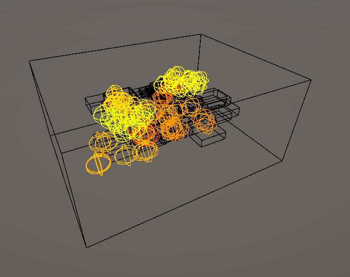 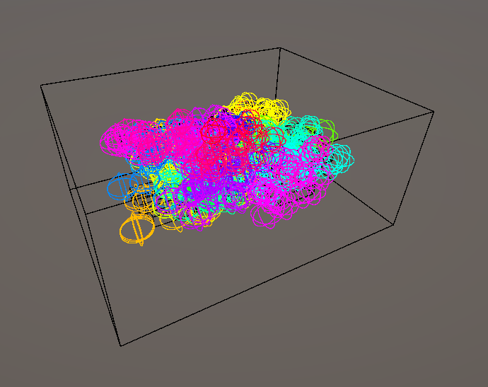 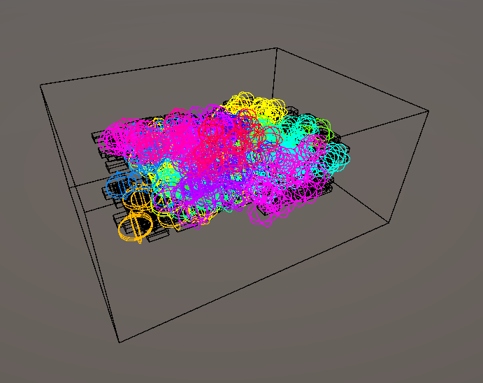
With the volume/cavity of the cave generated, the points lying within in a fixed spatial density containing information about the volumes had to be derived. The points generated in the compute shader contain the volume-bound information into Vector4 data structured buffers. The system uses thread IDs to calculate the appropriate indices, allowing the system to generate points in a volume at a higher density than customarily computed. The points in the coordinate system are generated and are closer to each other, allowing for higher fidelity of the generated mesh in the following steps.
bool WithinBounds(float3 pos, float3 boundPos, float3 boundDim)
{
bool x = (pos.x < boundPos.x + boundDim.x * 0.5 && pos.x > boundPos.x - boundDim.x * 0.5);
bool y = (pos.y < boundPos.y + boundDim.y * 0.5 && pos.y > boundPos.y - boundDim.y * 0.5);
bool z = (pos.z < boundPos.z + boundDim.z * 0.5 && pos.z > boundPos.z - boundDim.z * 0.5);
return x && y && z;
}
[numthreads(3,3,3)]
void GenerateBoundedPoints (uint3 id : SV_DispatchThreadID)
{
int3 _bounds = ceil(bounds);
float3 pos = (id) / 3.0 + _position - _bounds * 0.5;
bool boundInNode = false;
bool boundInSNode = false;
int n = id.x + id.y * 3 + id.z * 3 * 3;
int _index = id.x * 1 + id.y * 1 * 3 * _bounds.x + id.z * 1 * 3 * 3 * _bounds.y * _bounds.x;
int i;
bool boundInCavity = false;
bool boundInCamber = false;
for (i = 0; i < cavityCount; i++)
{
boundInCavity = WithinBounds(pos, cavityPositions[i].xyz, cavityDimensions[i].xyz);
if (boundInCavity)
i = cavityCount;
}
for (i = 0; i < camberCount; i++)
{
boundInCamber = WithinBounds(pos, camberPositions[i].xyz, camberDimensions[i].xyz);
if (boundInCamber)
i = camberCount;
}
for (i = 0; i < nodeCount; i++)
{
boundInNode = WithinBounds(pos, nodePositions[i].xyz, nodeDimensions[i].xyz);
if (boundInNode)
i = nodeCount;
}
for (i = 0; i < sNodeCount; i++)
{
boundInSNode = distance(pos, sphericalNodes[i].xyz) < sphericalNodes[i].w;
if (boundInSNode)
i = sNodeCount;
}
if(boundInCavity)
positions[_index] = float4(pos, 1);
else if(boundInCamber)
positions[_index] = float4(pos, 0);
else
positions[_index] = float4(pos, ((boundInNode || boundInSNode) && pos.y > floorHeight) ? 1 : 0);
}
This comopute shader generated the points in a volume corresponding to if it is in the cave cascades
or if it is manipulated by being inside a cavity or camber.
The points generated by the compute shader, filtered out to only display those within the generated cave volume.
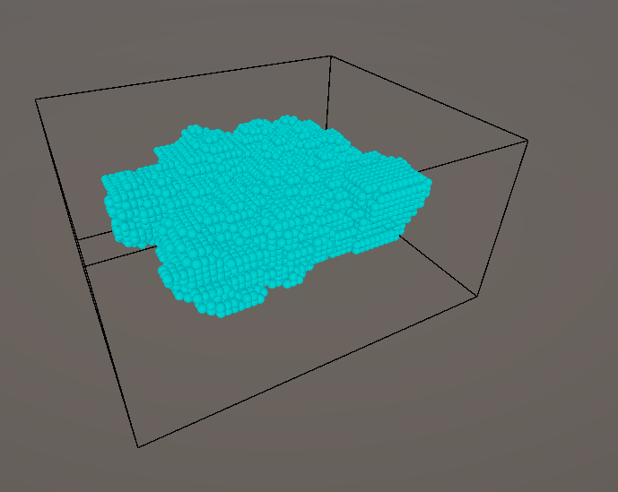
The mesh generation is taken care of by the MARCHING CUBES algorithm.
This algorithm uses the relative relationship between the 8 vertices of a cube to decide how the
intermediate surface should be.
Based on the value of the whether the points are part of solid geometry or not. There are 256
permutations of how each vertex of a cube can be and how it's resulting surface would look like.
This can further be optimized to 15 cases, as the cube is symmetric and the surface can be mirrored
across the axes. The algorithm uses a lookup table to determine how the surface should be generated
based on the values of the vertices.
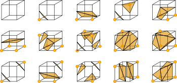
The previous points generation stage is crucial for optimal mesh generation by the Marching Cubes
algorithm.
The density of the cells used by the Marching Cubes algorithm determines the quality and resolution
of the generated mesh.
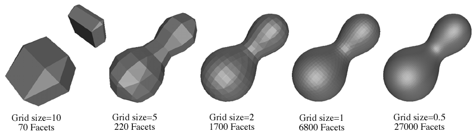
Wireframe of sample generated caves with this method.
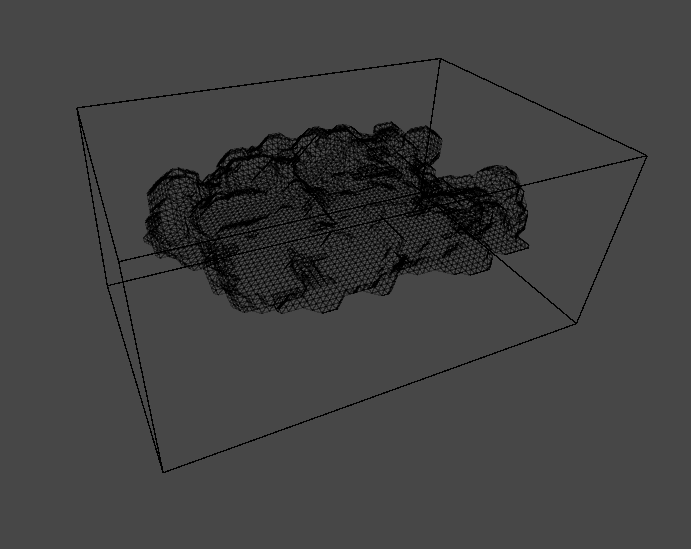 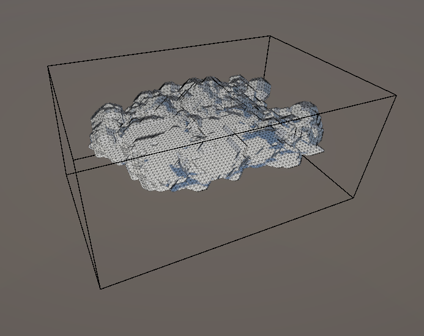 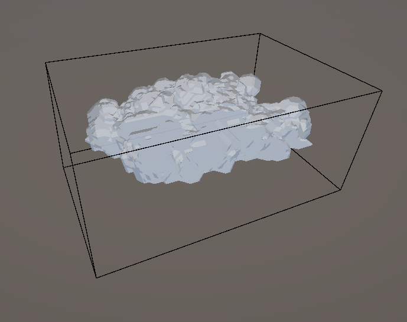 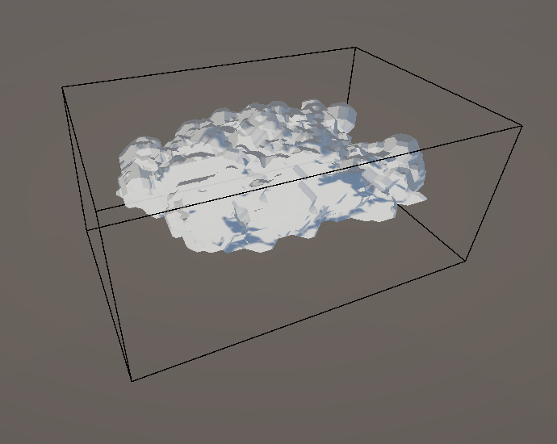
Caves when viewed from the inside and their wireframe representation.
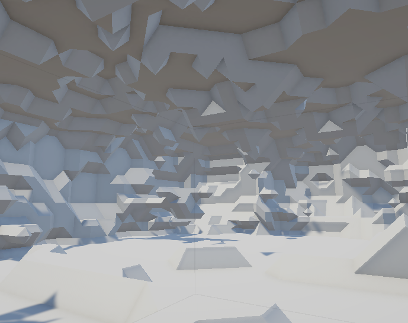 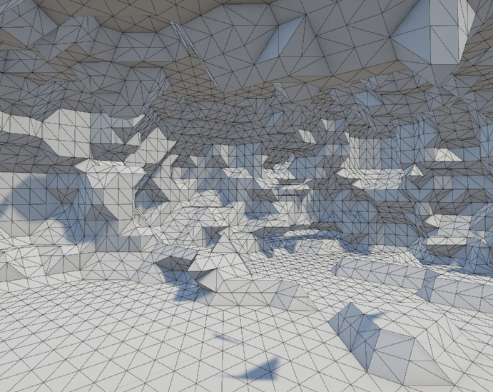Some examples of the caves generated using this method.
 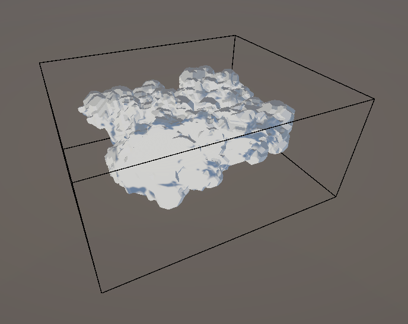
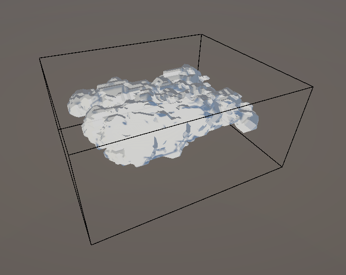
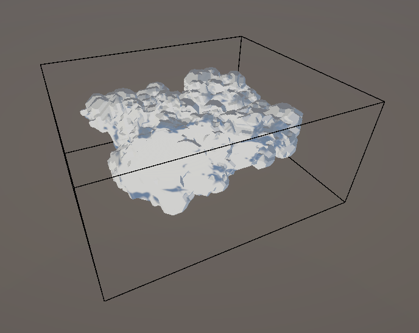
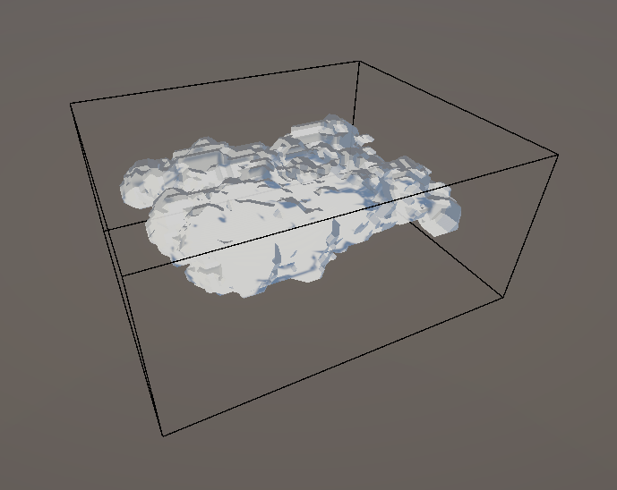
References:
1. Vagabond Dungeon and Cave Generation Method
2. Marching Cubes
Algorithm / Sebastian Lague
3. Marching Cubes Algorithm /
Freedom Coding
4. Unity Forum - Procedural Mesh and Compute Shader
5. Reddit - 100,000 agents with compute shader
6. Accidental
Noise Library
7. Artstation -
Danguad
8. Reddit - Cubical Marching Squares vs Dual Contouring
9. Swiftcoder - Isosurface Extraction
The Expansion.
February 23, 2025
From Cavity to Cave.
From Cave to Cave system.
Caves have some organic looking detail and their volumes can be manipulated to add features and
details.
The next step would be to expand it to form a cave system so players can have a more immersive
experience.
The cave system is a 2D grid of caves in a layout defined by the syustem dimensions.
With the basic layout of the caves in place, we needed a way to connect the caves to each other.
Fortunately, the cave manipulation can also be used to create tunnels within the volumes. If we make
each of the cave's bounds overlap with its neighbours,
The cavities will join the caves together and create a tunnel between them.
To generate the cavities that connect the caves, I first generate every axis-aligned connection
between neighbouring caves.
There will be
2 * M * N - (M + N)
cave connections for a cave system with dimensions M and N.
If we pick a random number < (M + N) from this collection of connections, we can randomize the cave
network to be more organic with tis links and tunnels.
This results in a overview that looks like this
Generating the caves with these cavities gives a nice cave system layout.
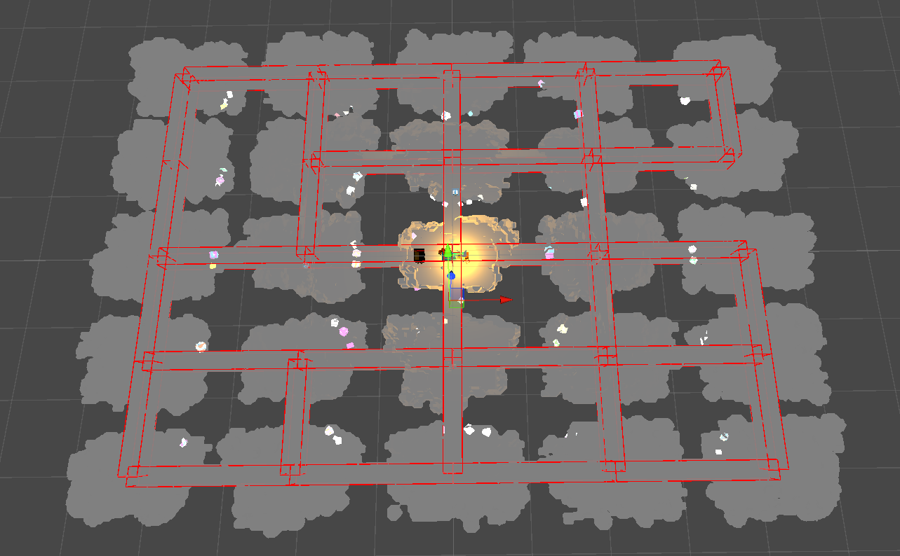
The cave system generates in about 0.5 - 1 second and is very controllable in both the connections
and dimensions.
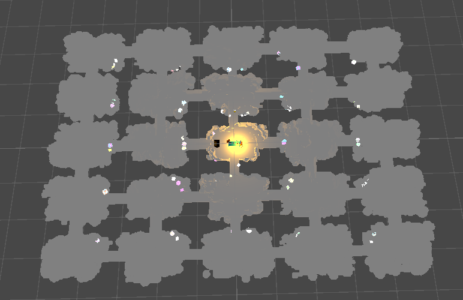
With a shader I developed to look into the caves(next post), it works out-of-the-box with the entire
system as well.
Small fly through of the cave system.


Looking into the pits. 1/2
March 2, 2025
Shader Magic ahead!
Read More
MY ABSOLUTE FAVOURITE PART OF THE PROJECT.
I love shaders and shader programming, and this was a great opportunity to experiment with some
ideas I had in mind for a long time.
One of the ideas was to use the signed distance functions and smoothmin concept.
Taking the minimum of two functions creates a rigid and disconnected result with sharp edges, as
seen in the first figure. This is because it directly picks the lower value without any blending.
The smoothmin function improves on this by introducing a blending parameter k, which smoothly merges
the two functions near their intersection. This results in a more continuous and organic shape, as
illustrated in the second figure.
This is the smoothmin function I wrote:
float smin( float a, float b, float k )
{
k *= 4.0;
float h = max( k-abs(a-b), 0.0 )/k;
return min(a,b) - h*h*k*(1.0/4.0);
}
Signed distance functions are mathematical operations that define distances and by extension, the
topology of a bounded volume in 2D or 3D.
And since they are mathematical functions, we can apply the smoothmin function to them as well,
resulting in satisfying blending of defined shapes.
 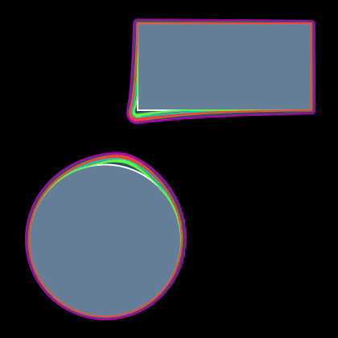
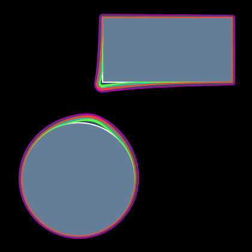I also explored dithering — a technique that simulates transparency by selectively omitting pixels in a pattern. This creates the illusion of see-through elements without the performance costs of true transparency, which can lead to issues like overdraw in games.
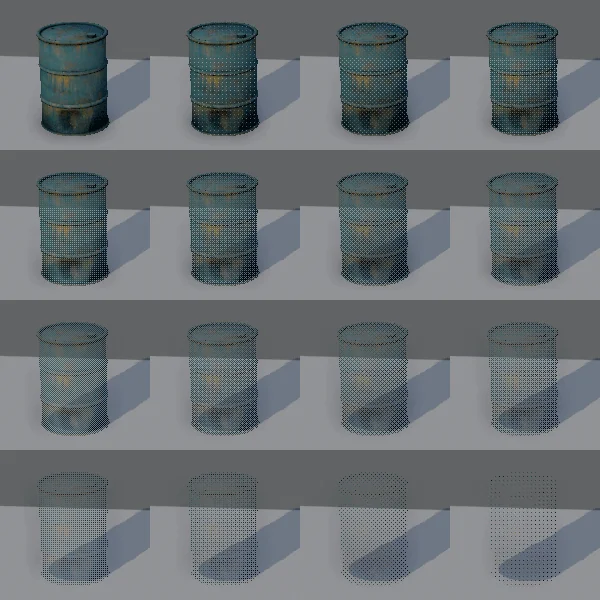

These concepts set up the foundation for the shader I developed to look into the caves.
References:
1. Ray Marching / Sebastian
Lague
2. Ray Marching /
SimonDev
3. Signed Distance
Functions / Iquilezles
4. Retro Dither Effect in
Unity
5. Surface-Stable
Fractal Dithering Explained
Looking into the pits. 2/2
March 4, 2025
Shader Magic ahead! continues...
Read More
With the dithering and signed distance functions in place, it was time to put them to use in the
shader.
To test out the implementation, I used a simple scene to see how the SDFs would behave and what
values would work well.

This looked very organic and fluid, the SDFs combined very well and made it seem that combinations
lead to a bigger result.
Extending this to make a shader that would look into the cave system was the next step.
I implemented this using Shader Graph, which is a visual shader programming tool in Unity that
allows for the creation of shaders using a node-based interface.
This was a great learning experience for me, since getting these custom SDFs and smoothmin functions
to work required writing custom function nodes.
Implementing the SDFs and smoothmin function in Shader Graph was a bit tricky, but I got it
working.
int numPositions;
float3 screenPositions[8];
float sdCircle_float(float2 p, float2 screenDimensions, float2 c, float r)
{
float2 vec = p - c;
vec.x *= screenDimensions.x / screenDimensions.y;
return (length(vec) - r);
}
float SMOOTHMIN_float(float a, float b, float k)
{
if (k <= 0)
k = 0.075;
k *= 4;
float h = max(k - abs(a - b), 0.0) / k;
return min(a, b) - h * k * h * 0.25;
}
void SDF_float(float2 p, float2 screenDimensions, float k, out float SDFValue)
{
SDFValue = 1.0;
for (int i = 0; i < numPositions; i++)
{
float sdfVal = sdCircle_float(p, screenDimensions, screenPositions[i].xy, screenPositions[i].z);
//float sdfVal = sdCircle_float(p, screenDimensions, float2(0.5, 0.5), 0.25);
SDFValue = SMOOTHMIN_float(sdfVal, SDFValue, k);
}
SDFValue = clamp(SDFValue, 0, 1);
SDFValue = saturate(SDFValue);
}
Using these functions in the graph made it very easy to implement the looks I wanted to achieve.
This resulted in a material that allowed loking into the cave, whose window for looking into the
cave was augmented by SDFs for every unit in screen space to smoothly blend inton each other
allowing for a intuitive, fluid and organic looking structure for teammates in close proximity in
the caves.
Dynamically changing SDFs example in the caves.
Notice you can see the outside of the caves not bounded by the SDFs.

Another feature I implemented was colors of the caves based on their world position.
I implemented this again in Shader graph and used custom functions in HLSL to get the colors and
patterns I wanted.
I used lacunar noise to layer varying amplitude and frequency noise to get a more organic looking
color pattern.
With this, I can alter the colors of the caves to get the desired look I want.
void CaveColor_float(float3 worldPosition, float lacunarity, float amplitude, float frequency, float4 ColorA, float4 ColorB, out float4 CaveColorOutput)
{
float noiseSum = 0;
lacunarity = (int) lacunarity;
for (int i = 0; i < lacunarity; i++)
{
float3 pos = worldPosition * frequency;
float noise = (snoise(pos * (snoise(worldPosition * 0.2) + 1) * 0.5) + 1) * 0.5 * amplitude;
noiseSum += noise;
amplitude *= 0.5;
frequency *= 2;
}
noiseSum /= 5.0;
noiseSum = clamp(noiseSum, 0, 2);
float val = pow(abs(noiseSum), 2);
CaveColorOutput = val * ColorA + (1 - val) * ColorB;
}
With this component of the shader complete, the cave's looks was done.
The shader does a great job of isolating only what is right next to the player.
This also promotes teamwork in close proximity as the SDFs will blend into each other and create a
bigger field of view into the caves.


References:
1. Unity Shader Graph
Basics: Custom Functions
2. Unity Shader Graph - Custom Function Node
DISASTER
April 2, 2025
WE RAN INTO A PROBLEM, and we need to BAKE THE CAVES.
I am upset.
The systems responsible for generating the caves, meshes and positions for the mineables and poison
are all based on compute shaders.
And they were built this way because of the performance and efficiency the compute shaders
provide.
We chose Photon Fusion and Hathora as the networtk platform and provider for our multiplayer
experience.
Our physics, i.e. rigidbodies, collisions etc. are handled by the CPU of the server we are hosting
the game on.
Unfortunately, compute shaders require a GPU to run and we don't have access to a GPU on the
server.
So, frustrating as it is, we cannot use the procedural pipeline set up for the cave generaion.
We then made the hard decision to bake the caves and all the required information so that they can
be packaged and spawned on the server both for the simplicity of having common elements like the
caves spawned for every player automatically and for the fact that all the physics will work
out-of-the-box by default since it is handled by the server.
This is the Scriptable Object container for all the cave data.
[CreateAssetMenu(fileName = "BakedCave", menuName = "Caves/BakedCave", order = 0)]
public class BakedCave : ScriptableObject
{
[SerializeField] private Mesh m_mesh;
[SerializeField] private List m_miningSpots;
[SerializeField] private List m_poisonSpots;
[SerializeField] private int m_caveLevel;
public Mesh Mesh => m_mesh;
public List MiningSpots => m_miningSpots;
public List PoisonSpots => m_poisonSpots;
public void Bake(Mesh mesh, List miningSpots, List poisonSpots, int caveLevel)
{
m_mesh = mesh;
m_miningSpots = miningSpots;
m_caveLevel = caveLevel;
m_poisonSpots = poisonSpots;
}
}
And this is the Scriptable Object container for the cave system data.
[CreateAssetMenu(fileName = "BakedCaveSystem", menuName = "Caves/BakedCaveSystem", order = 0)]
public class BakedCaveSystem : ScriptableObject
{
[SerializeField] CaveData m_caveData;
[SerializeField] BakedCave[] m_bakedCaves;
public CaveData CaveData => m_caveData;
public int m_level;
public void Bake(CaveData caveData, BakedCave[] bakedCaves, int level)
{
m_caveData = caveData;
m_bakedCaves = bakedCaves;
m_level = level;
}
public BakedCave this[int i, int j]
{
get
{
if (i >= 0 && i < m_caveData.caveSystemDimensions.x && j >= 0 &&
j < m_caveData.caveSystemDimensions.y)
return m_bakedCaves[i * m_caveData.caveSystemDimensions.y + j];
throw new System.IndexOutOfRangeException(
$"Index {i}, {j} is out of range for BakedCaveSystem with dimensions {m_caveData.caveSystemDimensions.x}, {m_caveData.caveSystemDimensions.y}");
}
}
}
With the containers in place, an editor-time script is used to generate the caves, cave systems and
required positions, bake them and save them as respective asset files in our Unity directory.
[ExecuteInEditMode]
public class CaveBaker : MonoBehaviour
{
[SerializeField] private CaveSystem m_caveSystem;
[SerializeField] private int m_startingSeed;
[SerializeField] private int m_bakingCount = 1;
private bool m_generationInProgress;
private void Start()
{
if (m_caveSystem == null)
{
Debug.LogError("CaveSystem is not assigned.");
}
}
public IEnumerator Bake()
{
#if UNITY_EDITOR
m_caveSystem.OnCavesGenerated.AddListener(OnCavesGenerated);
for (int i = m_startingSeed; i < m_startingSeed + m_bakingCount; i++)
{
m_generationInProgress = true;
m_caveSystem.Initialize(i);
yield return new WaitUntil(() => !m_generationInProgress);
// Save the baked cave system
var caves = m_caveSystem.CaveGrid;
var bakedCaves = new BakedCave[m_caveSystem.caveData.caveSystemDimensions.x * m_caveSystem.caveData.caveSystemDimensions.y];
for (int x = 0; x < m_caveSystem.caveData.caveSystemDimensions.x; x++)
{
for (int y = 0; y < m_caveSystem.caveData.caveSystemDimensions.y; y++)
{
var cave = caves[x, y];
var mesh = !Application.isPlaying ? cave.GetComponent().sharedMesh : cave.GetComponent().mesh;
if (!mesh)
{
Debug.LogError($"Cave mesh is null for cave at {x}, {y}");
continue;
}
if(!Directory.Exists($"Assets/Bakes/BakedMeshes"))
Directory.CreateDirectory($"Assets/Bakes/BakedMeshes");
// Save the mesh asset
var meshPath = $"Assets/Bakes/BakedMeshes/CaveMesh_{i}_{x}_{y}.asset";
AssetDatabase.CreateAsset(mesh, meshPath);
var bakedCave = ScriptableObject.CreateInstance();
bakedCave.Bake(mesh, cave.GetComponent().positions.ToList(), cave.GetComponent().poisonPoints.ToList(), i);
if(!Directory.Exists($"Assets/Bakes/BakedCaves"))
Directory.CreateDirectory($"Assets/Bakes/BakedCaves");
AssetDatabase.CreateAsset(bakedCave, $"Assets/Bakes/BakedCaves/BakedCave_{i}_{x}_{y}.asset");
bakedCaves[x * m_caveSystem.caveData.caveSystemDimensions.y + y] = bakedCave;
}
// Save the baked cave system
// Save the baked cave system
var bakedCaveSystem = ScriptableObject.CreateInstance();
bakedCaveSystem.Bake(m_caveSystem.caveData, bakedCaves, i);
if(!Directory.Exists($"Assets/Bakes/BakedCaveSystems"))
Directory.CreateDirectory($"Assets/Bakes/BakedCaveSystems");
AssetDatabase.CreateAsset(bakedCaveSystem, $"Assets/Bakes/BakedCaveSystems/BakedCaveSystem_{i}.asset");
}
}
#endif
yield return null;
}
public void OnCavesGenerated()
{
m_generationInProgress = false;
}
}
With the caves and cave systems baked, and the mesh data referenced, we can use the addressables
system in Unity to load the assets when needed.

Some examples of the baked cave meshes.
Alright! Crisis averted! albiet in a very unsatisfying way, especially to programmers that love
procedural generation and compute shaders.
However, we are back on track and the project is moving forward.
References:
1. Photon
Fusion Documentation : Network Runner